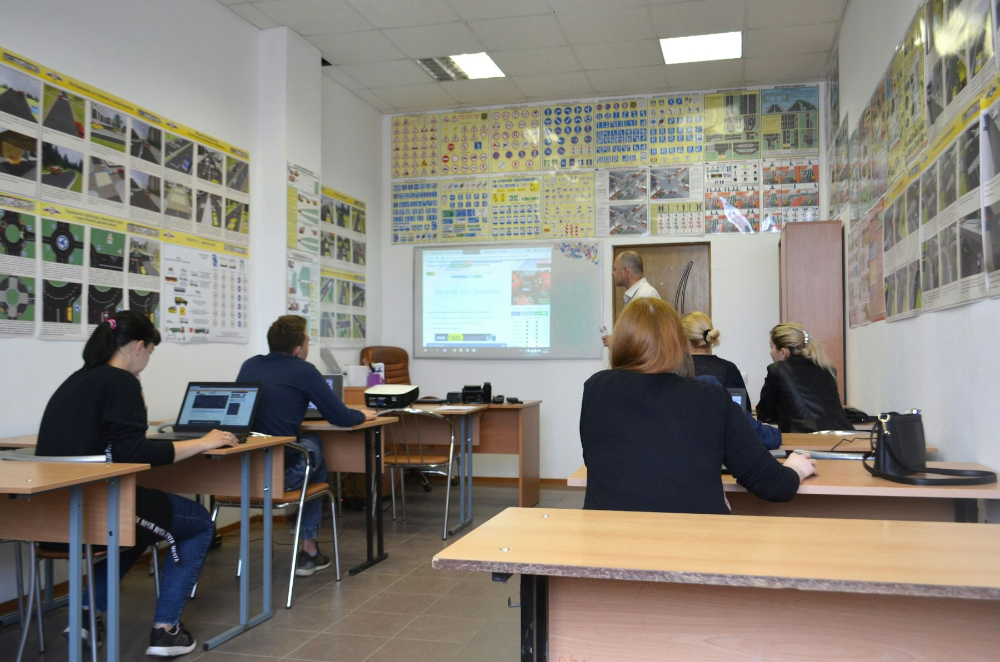

TL;DR
AI study tools significantly enhance learning by personalizing study experiences and streamlining routines. By adopting these innovative tools, students can maximize their study efficiency.
Introduction to AI in Education
Artificial Intelligence (AI) is reshaping the educational landscape. From personalized learning to automated administrative tasks, AI tools help students learn more effectively. By understanding AI's role in education, students can choose the right tools to fit their needs. These tools range from chatbots that assist in homework to platforms that adapt to individual learning styles. Let's delve into some of the best AI study tools available now.
Top AI Study Tools Overview
Some of the most impactful AI study tools include platforms like Quizlet, Grammarly, and Socratic. These tools enhance various aspects of studying. Quizlet uses AI to generate study sets tailored to individual subjects, while Grammarly aids in improving writing skills by offering real-time suggestions. Socratic utilizes AI to provide answers to questions posed by students. Understanding what each tool offers can help students maximize their study time.
Using AI for Personalized Learning
Personalized learning is one of the most significant advantages AI brings to education. Tools like Knewton and DreamBox Learning adapt their teaching techniques based on student performance. To utilize these tools, students should begin by assessing their learning preferences. After signing up, they can receive tailored lessons that focus on their strengths and weaknesses, paving the way for a deeper understanding of the material.
Integration of AI Tools into Study Routines
Integrating AI tools into study routines can streamline the learning process. To start, students should identify which subjects require improvement and choose corresponding tools. For instance, if a student struggles with mathematics, they might integrate DreamBox Learning into their daily study sessions. Additionally, setting up a schedule that allocates time specifically for tool usage can enhance consistency and effectiveness. Remember, regular practice is key.

Future of AI in Learning Environments
The future of AI in education looks promising as advancements continue. Emerging technologies like virtual reality and machine learning are set to play larger roles in how students learn. In coming years, we might see more immersive learning experiences that AI can facilitate. Keeping abreast of these innovations is essential for students who want to stay ahead. Engaging with technology now can provide invaluable experience for the future.
FAQ
What are AI study tools?
AI study tools are software applications that use artificial intelligence to enhance learning. They can personalize study experiences, provide real-time feedback, and automate tedious tasks.
How do I choose the best AI study tool?
Identify your study needs and preferences. Research different tools, read reviews, and consider free trials to find the perfect fit for you.
Can AI study tools replace traditional learning methods?
AI study tools are meant to supplement traditional learning, not replace it. They enhance understanding and efficiency while keeping the core learning aspects intact.
Are AI study tools cost-effective?
Many AI study tools offer free versions or trials. This allows you to assess their value without commitment. Premium versions typically provide additional features.
How can I improve my study habits with AI?
Utilize AI tools tailored for your learning style, set specific goals, and schedule regular sessions to practice and assess your progress effectively.
Photo credits
- Photo 1: Code💻 Ninja⚡ on Unsplash (https://unsplash.com/@ogelamar) (https://unsplash.com/photos/two-men-using-laptop-computes-DThlV4dYlnE)
- Photo 2: Milad Fakurian on Unsplash (https://unsplash.com/@fakurian) (https://unsplash.com/photos/a-blurry-image-of-a-black-and-white-background-7AuXtv6EV_w)
- Photo 3: Jexo on Unsplash (https://unsplash.com/@jexo) (https://unsplash.com/photos/white-printer-paper-on-white-table--Gy7GjLy-Vs)
- Photo 4: Thomas Bormans on Unsplash (https://unsplash.com/@thomasbormans) (https://unsplash.com/photos/a-notepad-with-a-pen-on-top-of-it-pcpsVsyFp_s)
- Photo 5: Ilya Sonin on Unsplash (https://unsplash.com/@ilyasonin) (https://unsplash.com/photos/people-sitting-inside-room-IsX2ZkbSk1Y)